“我们能做到！”女子铆钉工仿妆 | 反三七过三八
大家妇女节快乐呀！
上面这张海报相信大家都不陌生，是第二次世界大战期间的一张美国宣传海报，由J·霍华德·米勒（J. Howard Miller）于1943年制作，本意是用来提升西屋公司工人的士气。事实上这张海报在二战期间并不常见，20世纪80年代早期才重新被发现，女权主义者和其他人则利用海报积极向上的态度和明显的政治倾向来将之重新整合为多种形式，包括自我宣传、活动推广、广告和模仿等。
值此第一百零八个国际劳动妇女节之际，酷儿论坛的三位女工为大家带来了这个女子铆钉工的仿妆。也借着个机会向大家倡导“反三七过三八”，妇女节的本质是为了庆祝妇女在经济、政治和社会等领域做出的重要贡献和取得的巨大成就，而近几年对于妇女的污名却愈演愈烈。引用Owen文章中的一段话“认为女生节本身没有将妇女节污名化，则是把语言本质化，忽视了这种主动选择背后的隐喻，更不用说女生节重新引爆网络是因为“由女生到妇女只差一日”这样带着“处女情结”的性污名化。”，更多内容欢迎大家阅读反思 | 你为什么不反对女生节。

下面是女子铆钉工仿妆的妆容分享。
从图片中可以看出，铆钉工的眉毛是非常欧美的挑眉，这也是本次妆容的重点之一。因此我们在上底妆之前，先修好了眉毛，用眉胶画出了眉形后再用遮瑕膏修饰眉毛边缘，让它看起来更干净，同时也起到了提亮眉骨的作用。

使用产品：NYX眉胶 色号：Black
在上底妆之前要做好保湿工作防止卡粉，选用适合自己肤色的粉底，这样不会过于假面，记得脖子也要带到哦。
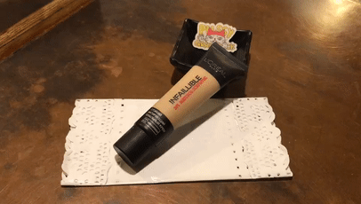
使用产品：L'OREAL INFAILLIBLE 24h哑光粉底（俄版） 色号：5号
将粉底和遮瑕推匀后，要进行这个妆容最最最最最最重要的部分，那就是——修容啦！首先将深色的修容膏上在需要打阴影的部位，浅色的上在需要提亮的部位（同时还可以遮盖一下眼下的黑眼圈和泪沟）。
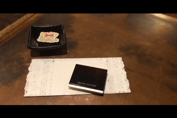
使用产品：KEVYN AUCOIN双色修容膏 色号：#4

然后再用美妆蛋把它们晕染开来。

修容膏的效果偏自然，所以还需要粉状的修容和古铜粉做进一步的加强，尤其是太阳穴、两颊和下颌线的位置。

使用产品：WetNWild 双色修容盘 色号：P7491
PhysiciansFormula黄油古铜粉 色号：LightBronzer

修容完成之后，在眼下和两颊需要提亮的位置进行烘焙定妆，同时这也可以使修容的界线更明确。

使用产品：GIVENCHY四色散粉 色号：#2

用美妆蛋上完散粉先不急着扫掉，停留的期间可以进行眼影的部分。眼下的散粉还可以防止眼影掉落的飞粉，使妆面更干净。
眼妆并没有很特别的地方，就是一个简单的大地色。先用一个浅棕色从靠近眼尾的地方晕染到整个眼窝。
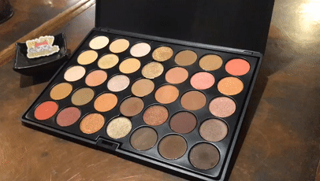
使用产品：CROWN 35RG眼影盘

然后用一个深棕色对眼尾三角区进行加深，之后用一个更深的颜色在更小的范围进行加深，眼尾的颜色要往眉毛的位置上挑。
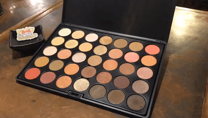
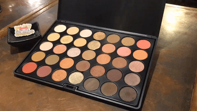
使用产品：CROWN 35RG眼影盘
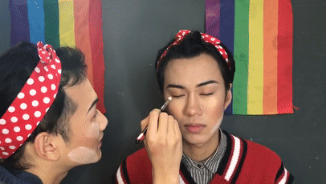
用一个金色的亮片色进行眼中打亮。
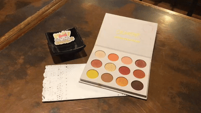
使用产品：ColorPop YesPlease眼影盘

用一个白色的珠光色对眼头打亮。
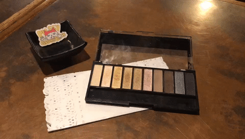
使用产品：WetNWild十色眼影盘 色号：P753A
然后用之前晕染眼尾的刷子，不用粘粉，对眼中的打亮进行一下过渡晕染，用上眼窝色的刷子对整个眼妆的边缘再进行一下晕染。最后画上眼线、戴上假睫毛、涂上睫毛膏这个眼妆就完成啦。

使用产品：PhysiciansFormula三色眼线胶笔 色号：WarmNudeEyes
KissMe眼线液笔 色号：棕色
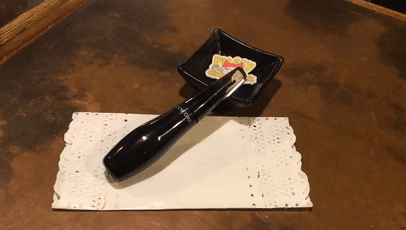
使用产品：LANCOME天鹅颈睫毛膏 色号：01
眼妆完成后，将烘焙的散粉扫去，用一个带点棕调的蜜桃色上在腮红的位置。
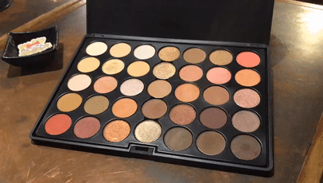
使用产品：CROWN 35RG眼影盘
在鼻梁、颧骨、额头、眉骨、唇峰和下巴等地扫上金色的高光。
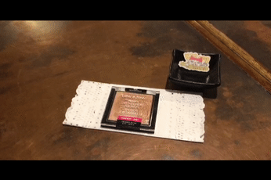
使用产品：WetNWild单色高光 色号：P322B
嘴唇的部分用一个偏橘的玫瑰色打底后，再叠加两个橘色的眼影。
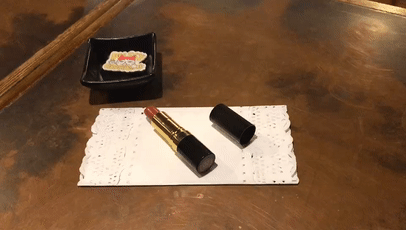
使用产品：REVLON唇膏 色号：225Rosewine
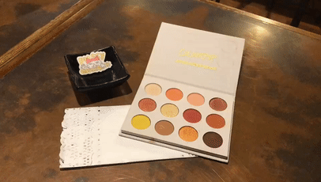
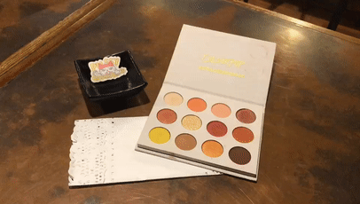
使用产品：ColorPop YesPlease眼影盘
最后换上牛仔外套，戴上头巾，这个仿妆就完成啦。
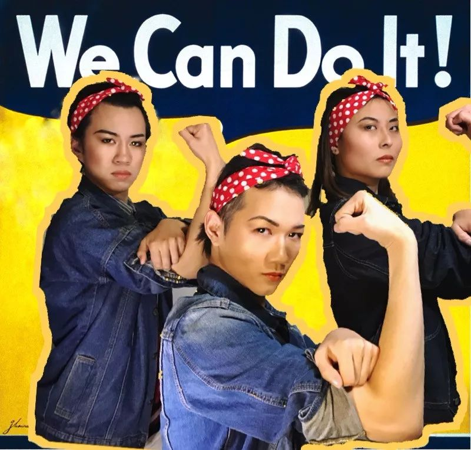

大家如果感兴趣，也可以画一个这样的妆，在微博上分享出来并@酷儿论坛哦。如果大家对于妇女节或“反三七过三八”有什么自己的看法，欢迎在留言区和其他人一起讨论~
最后再次祝大家妇女节快乐~

欢迎扫描二维码进行打赏